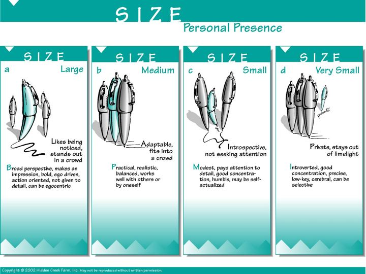
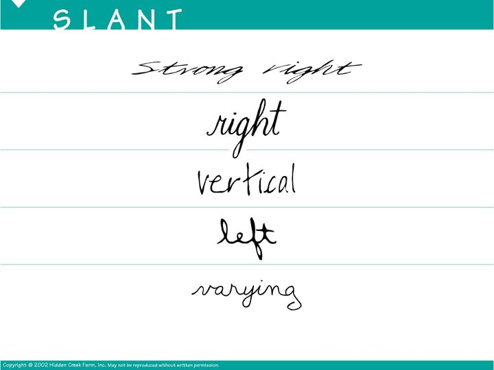
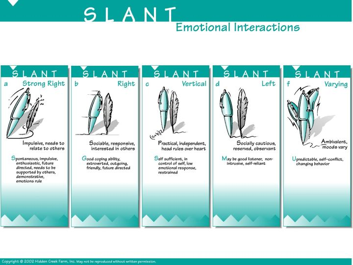
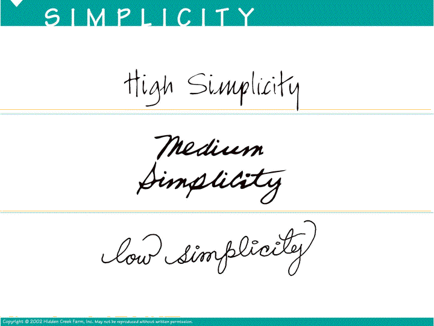
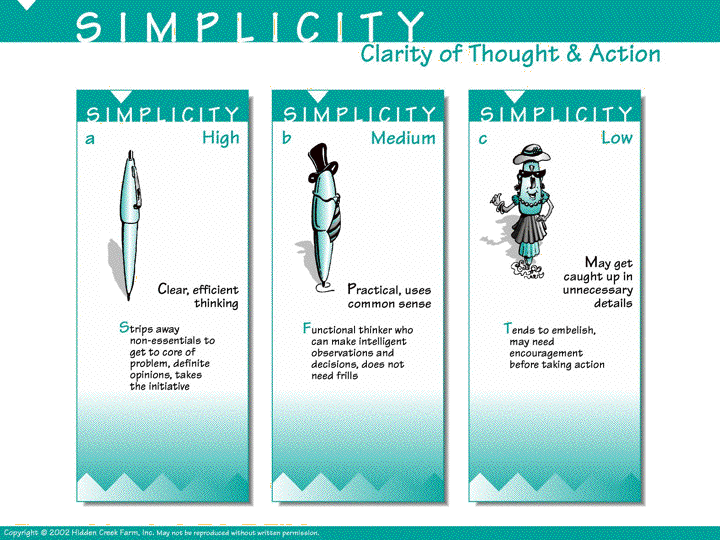
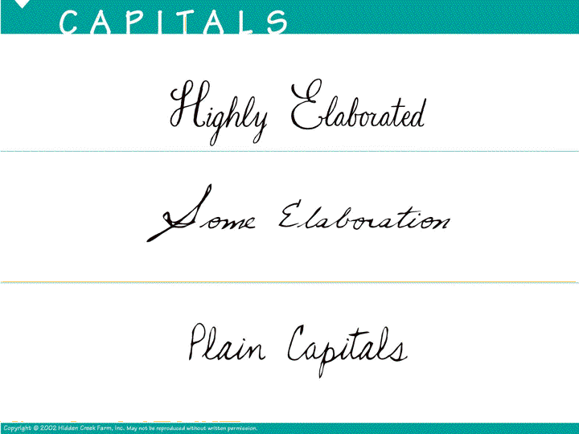
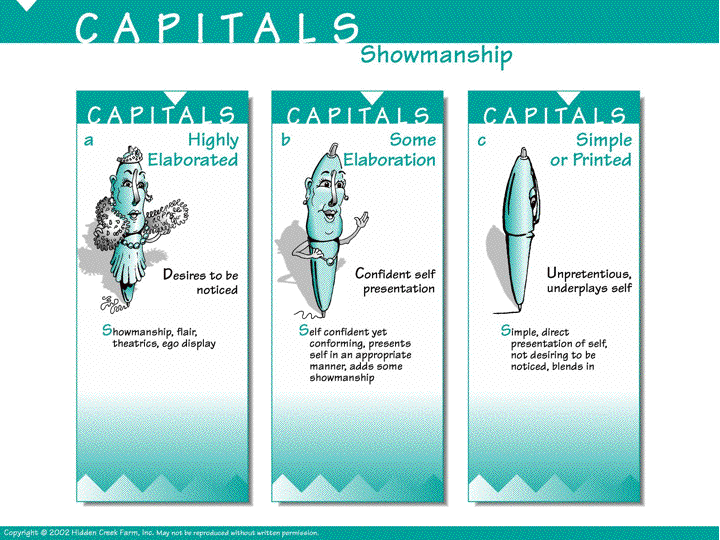
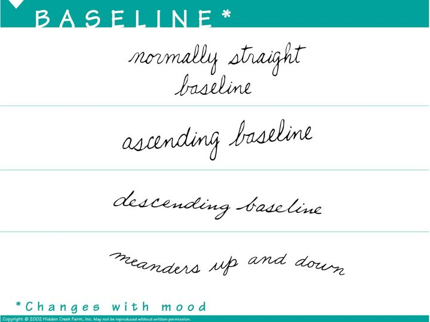
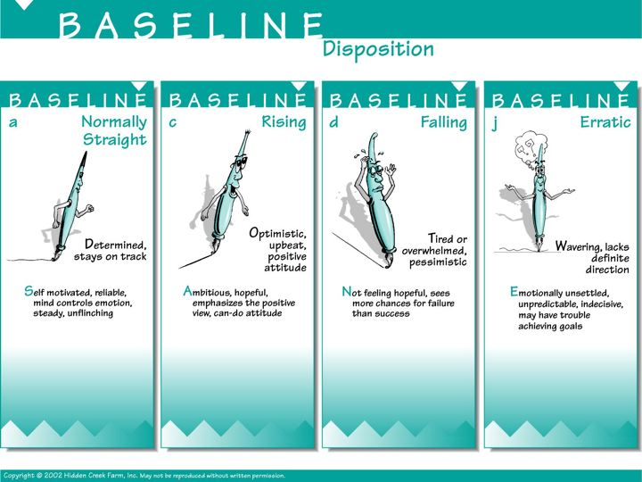

SIZE
Large
medium
small
very small

SIZE - Personal Presence
a) Large - Likes being noticed, stands out in a crowd. Broad perspective, makes an impression, bold, ego driven, action oriented, not given to detail, can be egocentric.
b) Medium - Adaptable, fits into a crowd. Practical, realistic, balanced, works well with others or by oneself.
c) Small - Introspective, not seeking attention. Modest, pays attention to detail, good concentrations, humble, may be self-actualized
d) Very Small - Private, stays out of limelight. Introverted, good concentration, precise, low-key, cerebral, can be selective

SLANT
Strong RIght
right
vertical
left
varying

SLANT - Emotional Interactions
a) Strong Right - Impulsive, needs to relate to others. Spontaneous, Impulsive, enthusiastic, future directed, needs to be supported by others, demonstrative, emotions rule.
b) Right - Sociable, responsive, interested in others. Good coping ability, extroverted, outgoing, friendly, future directed.
c) Vertical - Practical, independent, head rules over heart. Self Sufficient, in control of self, low emotional response, restrained.
d) Varying - Ambivalent, moods vary. Unpredictable, self-conflicet, changing behavior.

SIMPLICITY
High Simplicity
Medium Simplicity
low simplicity

SIMPLICITY - Clarity of Thought and Action
a) High - Clear, efficient thinking. Strips away non-essentials to get to core of problem, definite opinions, takes the initiative.
b) Medium - Practical, uses common sense. Functional thinker who can make intelligent observations and decisions, does not need frills.
c) Low - May get caught up in unnecessary details. Tends to embellish, may need encouragement before taking action.

Capitals
Highly Elaborated
Some Elaboration
Plain Capitals

CAPITALS - Showmanship
a) Highly Elaborated - Desires to be noticed. Showmanship, flair, theatrics, ego display.
b) Some Elaboration - Confident self presentation. Self confident yet conforming, presents self in a appropriate manner, adds some showmanship.
c) Simple or Printed - Unpretentious, underplays self. Simple, direct presentation of self, not desiring to be noticed, blends in.

BASELINE * Changes with mood
normally straight baseline
ascending baseline
descending baseline
meanders up and down

BASELINE - Disposition
a) Normally Straight - Determined, stays on track. Self motivated, reliable, mind controls emotion, steady, unflinching.
b) Rising - Optimistic, upbeat, positive attitude. Ambitious, hopeful, emphasizes the positive view, can-do attitude.
c) Falling - TIred or overwhelmed, pessimistic. Not feeling hopeful, sees more chances for failure than success.
d) Erratic - Wavering, lacts definite direction. Emotionally unsettled, unpredictable, indecisive, may have trouble achieving goals.